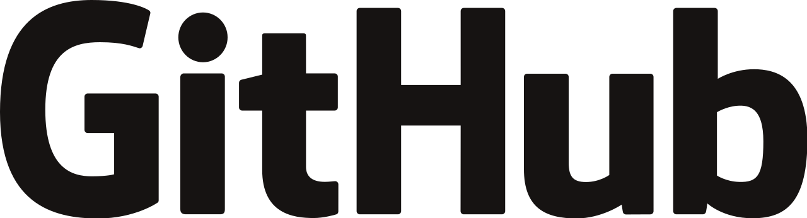

PORTFOLIO
BLOX Main Project: "BLOX Land - experimental farm" Ryse Energy - Solar & Hybrid I Welcome You To My Portfolio Project 1. SARS-CoV-2 PL Project 2. "Code a Mars Landing" Project 3. Balanced Nutrition Calculator Cover Letter Resume My All Application Documents
⬠My Professional Development Map ⬠1. Python 2. Anaconda 2. Dash by Plotly 3. Datawrapper 4. Django 5. "Cheese Shop" 😠6. Django + Plotly by Dash 7. PySCADA 8. PyPSA + PyPSA-PL 9. PyCharm 10. PyYAML 11. GitHub 12. Ubuntu 13. BASH 14. Google Cloud 15. HEROKU 16. Selenium 17. CSS 18. HTML
My Very Useful Content My Motivation Power Set ✌💙💚♻️🌌🚀🌍🌏🌎🛰🌌♻️💚💙✌ Mini Visiting Cards
BLOX Main Project: "BLOX Land - experimental farm" Ryse Energy - Solar & Hybrid I Welcome You To My Portfolio Project 1. SARS-CoV-2 PL Project 2. "Code a Mars Landing" Project 3. Balanced Nutrition Calculator Cover Letter Resume My All Application Documents
⬠My Professional Development Map ⬠1. Python 2. Anaconda 2. Dash by Plotly 3. Datawrapper 4. Django 5. "Cheese Shop" 😠6. Django + Plotly by Dash 7. PySCADA 8. PyPSA + PyPSA-PL 9. PyCharm 10. PyYAML 11. GitHub 12. Ubuntu 13. BASH 14. Google Cloud 15. HEROKU 16. Selenium 17. CSS 18. HTML
My Very Useful Content My Motivation Power Set ✌💙💚♻️🌌🚀🌍🌏🌎🛰🌌♻️💚💙✌ Mini Visiting Cards
 BLUE LIQUID OXYGEN – “BLOX”: Technical Social Organization For Creating Useful Social Solutions
BLUE LIQUID OXYGEN – “BLOX”: Technical Social Organization For Creating Useful Social Solutions
"BLOX Land - experimental farm"
2022-02-02 - Today is the first round anniversary of setting up my GitHub account. It is also the day I begin my life project.
✌💙💚♻️🌌🚀🌍🌏🌎🛰🌌♻️💚💙✌
I spend all my time preparing a presentation now - which should be complete by Friday morning.
2020.02.04 - PRESENTATION
Since 2019, I asked for legal and medical assistance from the Polish State and various state institutions, social organizations in Poland and in the European Union - I did not receive any help. Nobody even asked if I needed anything and how I felt. Today I feel that I have gained the strength to be able to repair my life myself. And perhaps also with your help for the common good of the world community.
It would be great - if the global community could employ me to implement my open social project for $ 2,500 USD net per month.
But I am also aware that this may not be achievable. That is why I also decided to look for employment with potential technology partners who provide solutions in the field of: hybrid energy. To be able to earn money and gain new experience to implement my life project.
I need to start by getting the money to pay a lawyer - to help me conduct my bankruptcy proceedings in court. To spread my debt around $ 40,000 USD to be repaid in installments.
When I am financially viable, I will be looking for a piece of land to lease - it could even be a piece of land high in the mountains. I can live very modestly and I don't need excessive working conditions - like Richard Stallman :-).
Then I will have to build a place to live which is based on the frame of the sea container.
YES! - this will be the beginning: "BLOX Land - experimental farm"
The main goal of my life project will be to build a self-sufficient ecological electric energy supply for this farm. I am planning a hybrid energy system with a maximum efficiency of 40kW - 20kW from wind turbines and 20kW from PV panels. When I achieve these goals - I plan to build an ASIC cryptocurrency miner for DOGE mining with a power of up to 10kW. The development of "Blockchain" technology is also very important for other areas of life: wherever secure credentials are required. Blockchain The rest of the produced energy will be used by the farm, and the surplus will be transferred to the public grid as a prosumer (ON-GRID technology). If it is possible, it would also be worth implementing an energy storage. The overproduction of energy put into the public grid and the energy storage should protect the farm so that no energy costs are ever incurred. Distributed - renewable energy sources are a very important issue for energy security. It would be worth installing water cooling for the excavator. The cooling system would heat the utility water for the farm, which would also support the heat source during the heating season. One could also think of a ventilation system for the living quarters, the air of which would be heated in an excavator. Everything is aimed at the most efficient use of each type of energy. Workshop, production and technical premises would also be constructed from the frames of sea containers.
Now the key issue for potential sponsors - the project would be "Open Source", i.e. available and open to everyone. The farm area would be monitored and everyone could have an overview. All measurement and performance parameters would also be publicly available on the Internet for anyone interested - using the constructed "dashboard" control panels. Each sponsor would have access to the possibility of building and using the "Supervisory Control and Data Acquisition" software for their own use, such as PySCADA. My suggestion is to create a community that uses the technologies listed in "My Professional Development Map". Perhaps our community will motivate other people to build similar farms elsewhere in the world. If our community would find a person somewhere - who also needs help like me: it would also be possible to settle that person on "BLOX Land - experimental farm". There is only one condition: it would be necessary to collect the necessary amount of funds needed to implement such a plan. (this person must also have similar views, goals and willingness to work and develop in technologies useful for the project). The farm would also be forbidden to consume any stimulants or be under the influence of them. From stimulants, only coffee, different types of teas, chocolate and cocoa are allowed ;-):-D.
P.S. It would be nice to meet a women life partner with similar interests and goals, who would also like to live on a farm to support each other in the implementation of the "BLOX Land - experimental farm" life project. After achieving the basic goals - there are also plans to build a vegetable, herbs, fruit and flower garden and a beekeeping apiary: in which the various technology described earlier would also be used in order to develop, experiment and build socially useful solutions and tools. Everything is aimed at ensuring a self-sufficient, ecological, modest - but dignified human existence: which every human being on earth deserves. The computing power of the excavator would also be allocated to very socially useful projects.
✌💙💚♻️🌌🚀🌍🌏🌎🛰🌌♻️💚💙✌
 DOGE
Dogecoinfah.com
Become a Sponsor to Luke on GitHub
DOGE
Dogecoinfah.com
Become a Sponsor to Luke on GitHub
I tried to set up my "Doge Core Wallet" and I can't finish "Syncing Headers". Because I do not have a sufficient data package in my mobile internet, because currently I can only afford 15GB + 25 PLN per month. I have to save transfer as I only have 5GB left until February 20. If someone can help me - every transfer top-up and funds on my account in the amount of PLN 25 is very much appreciated :-). On the following website of our Polish telephone operator, you can make a payment - just enter my phone number: 571920898 and the e-mail address to which the payment confirmation is to be sent, it can be my e-mail: luke.blue.lox@gmail.com. If you are not from Poland - VISA and Google Pay payments are also accepted.
If I achieve "synchronization" I will inform You about it immediately here in order to stop any next payments - because I do not need anything else above i this issue. If You Can - Support Me
Ryse Energy - Solar & Hybrid
A potential technological partner on the European continent and possibly a future employer.
Ryse Energy - Solar & Hybrid
I Welcome You To My Portfolio
I will take up any job in the renewable energy industry or any job remote. But very most willingly also with the possibility of development as a "Data Application Architect" for the renewable energy sector.
+
Willingly With Possibility To Continue Training In: Python, Anaconda, Dash by Plotly, Datawrapper, Django, PyPSA & PyPSA-PL, PySCADA, Gunicorn, Nginx, PyYAML, GitHub, Ubuntu Server + Shell Script, Google Cloud, Google Sheets, Heroku, Selenium, CSS, HTML Or Others Necessary For Team Work. In Order To Be Able To Work In The Future As: Data Application Architect. It Would Be Great In The Future - Co-Create Such Wonderful And Useful Tools, as: data applications that help manage and automate various technological, production or decision-making processes.
P.S. I work standing up at the computer, as it promotes better health, efficiency and creativity.
If You Require Engineering Or Undergraduate Studies To Work On The Position: Data Application Architect, I Am Ready To Start Part-Time Studies - Sponsored By The Employer.
⬠2022-02-08 22:32:00 Evening UPGRADE_2.0_APP Complete ⬠Startupscript.sh 2022-02-08 Sheet Example UPGRADE_2.0_EPIDEMIC_APP repository available only to sponsors: UPGRADE_2.0_EPIDEMIC_APP - Repository ⬠2022.02.06 â¬
Full Automation For My "EPIDEMIC" App Datawrapper API Update Custom Lines My second milestone in learning programming and developing my "EPIDEMIC" app.
⏬ 2022.01.30 ⏬
Full automation for weekly Sunday update: for next all week range. Sunday Update By Cron Schedule Add Weekly Sheets Set Update AVR7D Array Range 7D ⬠2022.01.29 â¬
Full automation for daily updates. GitHub PORTFOLIO
I Need Help Because I Am In a Very Difficult Financial And Life Situation.
I Also Need a Lawyer That Will Help Me Carry Out My Consumer Bankruptcy.
"In nature, nothing is lost" - everyone will receive and be judged according to their merits and deeds.
2022.01.25 - Łukasz "Luke Blue" Andruszkiewicz From The Giant Mountains
"W przyrodzie nic nie ginie" - każdy dostanie i zostanie osądzony: według zasług i czynów swoich.
2022.01.25 - Łukasz "Luke Blue" Andruszkiewicz z Karkonoszy
My Cases Files Additional Information I Will Give You Prior Contact:
luke.blue.lox@gmail.com
Best Wishes & Lot Of Health
✌💙💚♻️🌌🚀🌍🌏🌎🛰🌌♻️💚💙✌
Łukasz "Luke Blue" Andruszkiewicz From Poland
(ADSS - All-dielectric self-supporting) optical fiber cable
Portfolio - RES
Portfolio - Neuralink
Project 1. SARS-CoV-2 PL "EPIDEMIC" app.
 SARS-CoV-2 PL - English: "EPIDEMIC" app
SARS-CoV-2 PL - Polski: aplikacja "EPIDEMIA"
My database for back-end - data source for charts and maps in Google Sheets.
AVR7D
Voivodeships
Districts
AVR7D/10000
SARS-CoV-2 PL - English: "EPIDEMIC" app
SARS-CoV-2 PL - Polski: aplikacja "EPIDEMIA"
My database for back-end - data source for charts and maps in Google Sheets.
AVR7D
Voivodeships
Districts
AVR7D/10000
Project 2. "Code a Mars Landing"
The project is suspended until further notice due to the need to develop the "EPIDEMIC" app.
 "Code a Mars Landing"
"Code a Mars Landing"
Project 3. Balanced Nutrition Calculator"
The project is suspended until further notice due to the need to develop the "EPIDEMIC" app.
Project 3. - it will be aimed at developing a calculator for automatic calculations, based on the template presented below.
My All Application Documents
Next level 1.1
Python.org Python - Wikipedia

Anaconda.com Anaconda - Wikipedia

Plotly.com Plotly - Wikipedia

Djangoproject.com
Django - Wikipedia
"Cheese Shop" 😁
PyPI - Wikipedia
Dash by Plotly + Django
Dash by Plotly + Django - PyPI
Pyscada.readthedocs.io
Pyscada - PyPI
Gunicorn.org
Gunicorn - Wikipedia

Nginx.org
Nginx - Wikipedia
(11/11) Consider this a goodbye/Christmas gift 🎄- the first open bottom-up model of the Polish power sector: PyPSA-PL. Based on #PyPSA by @nwormbot @fneum_ et. al. Freely available to energy geeks in Poland and abroad: https://t.co/inSbHPBQUD. Use wisely and see you later. pic.twitter.com/8dQTyhR4qr
— Paweł Czyżak (@paczyzak) December 20, 2021
PyPSA - GitHub
PyPSA-PL - GitHub
"Unix" - Bugs
Jetbrains.com/PyCharm
PyCharm - Wikipedia
My Most Advanced Py File using PyYAML
⏫ My Config PyYAML File For Above Py File ⏫
PyYAML.org
YAML - Wikipedia

Github.com
GitHub - Wikipedia
GitHub Pages

Ubuntu Server
Ubuntu - Wikipedia

My Shell script
Gnu.org/software/bash
Bash - Wikipedia
Cloud.google.com
GCP - Wikipedia
Heroku.com
Heroku - Wikipedia

My CSS file
www.w3.org/TR/CSS/#css
CSS - Wikipedia

My HTML file
Html.spec.whatwg.org
HTML- Wikipedia
— Luke Blue (@LukeBlueLOx) January 22, 2022
"I Like These Odds" - YouTube
✌💙💚♻️🌌🚀🌍🌏🌎🛰🌌♻️💚💙✌

Mini Visiting Cards - For Printing